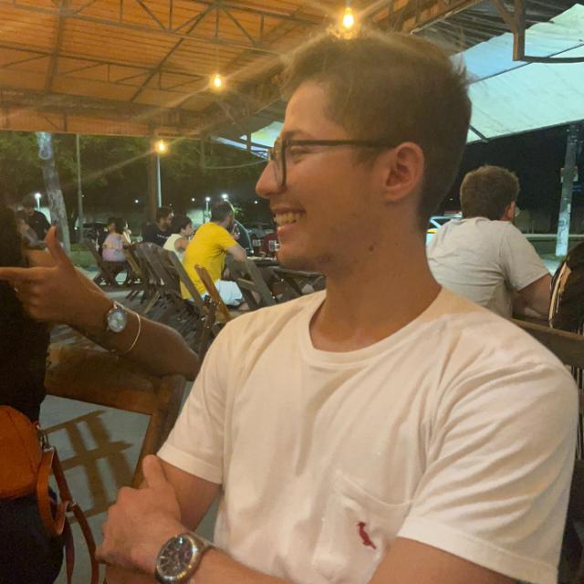
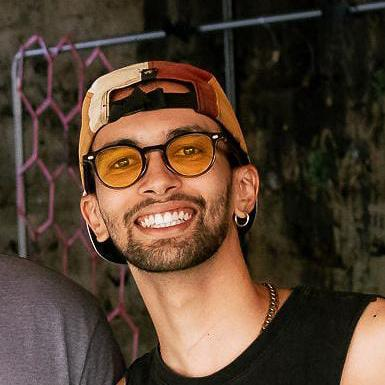
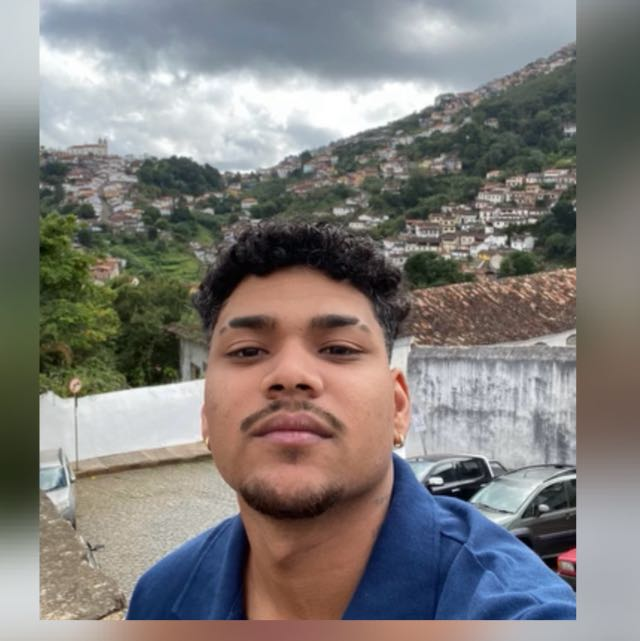
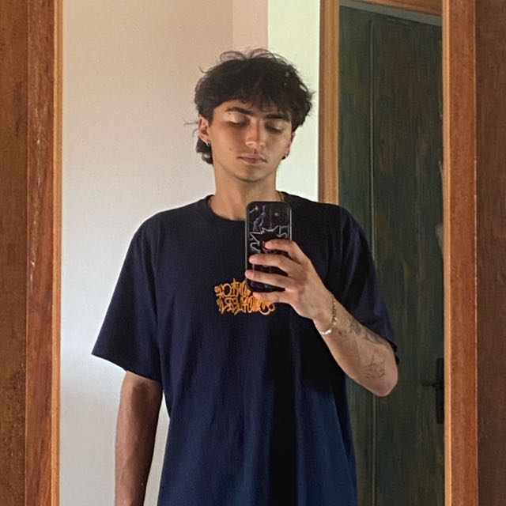
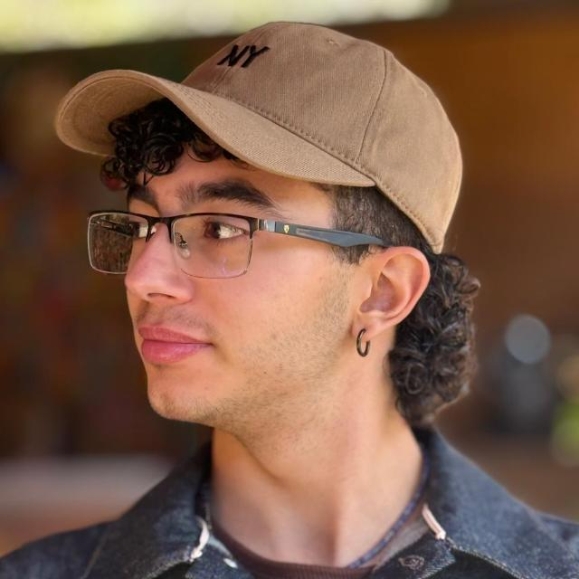
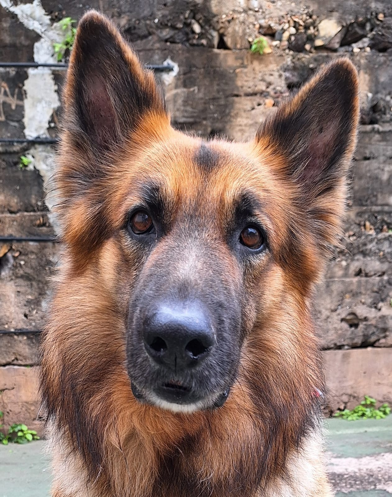
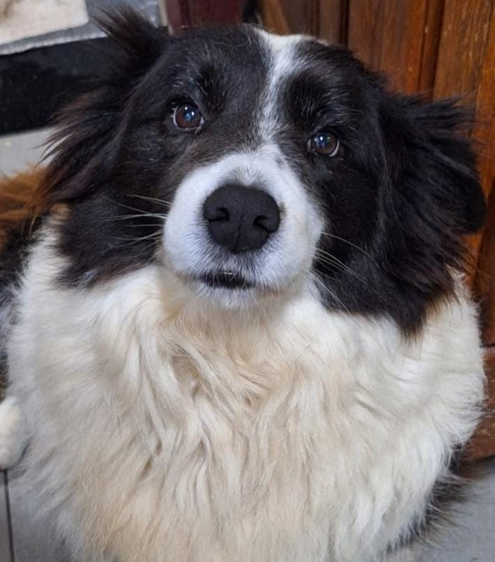

DuVally
Engenharia Civil
A casa continua sua história com estudantes que compartilham experiências, responsabilidades e a vida universitária em Ouro Preto.

Engenharia Civil

Ciência da Computação

Biologia

Engenharia de Produção

Biologia

Ciência da Soneca

Engenharia do Caos
A Adega oferece oportunidades de moradia para calouros de todos os cursos da UFOP. Para informações sobre vagas e o processo de ingresso, consulte os moradores.